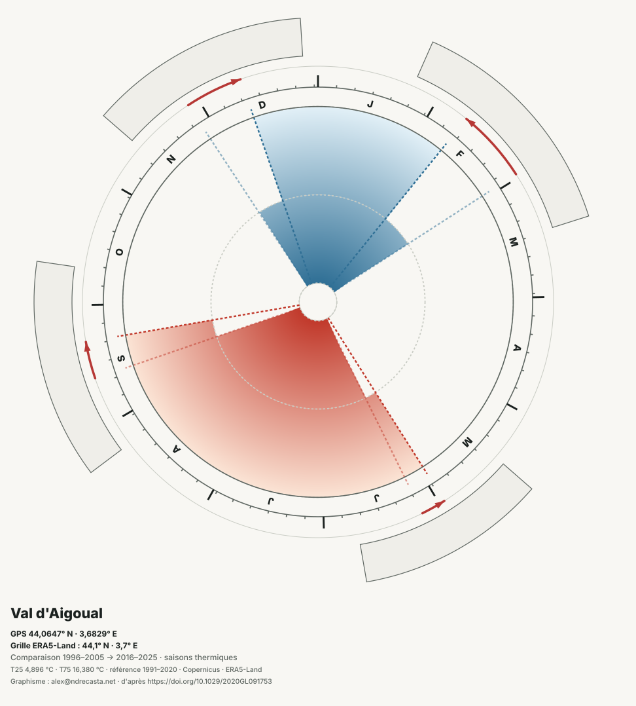
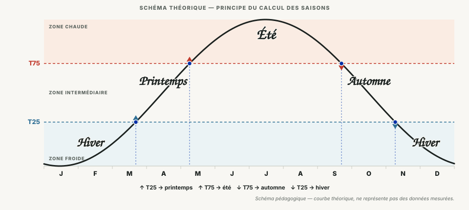

Votre territoire
Paramètres du cadran
La première génération d’une maille peut prendre quelques minutes.
Service territorial · méthode V4
Générez le calendrier thermique d’un point GPS et observez comment la place du chaud et du froid évolue entre 1996–2005 et 2016–2025.
Indiquez un point GPS. Le service collecte la maille ERA5-Land correspondante, calcule les quatre frontières et prépare les exports.
Votre territoire
La première génération d’une maille peut prendre quelques minutes.
Le résultat apparaîtra ici.
Renseignez les coordonnées pour lancer le calcul.
Le cadran décrit une réanalyse climatique maillée. Il ne représente ni des saisons météorologiques fixes, ni une mesure effectuée sur la parcelle.
Résultat local
| Indicateur | 1996–2005 | 2016–2025 | Évolution |
|---|
Les saisons thermiques décrivent le moment où un lieu passe durablement d’un régime froid à un régime intermédiaire, puis chaud — et inversement.
T25 et T75 sont calculés une fois sur la référence 1991–2020 puis conservés pour les deux décennies.
Chaque franchissement de seuil marque le début d’une saison thermique locale.
L’écart entre les dates indique une avance, un retard ou un changement de durée.
L’exemple initial du Val-d’Aigoual superpose 1996–2005 et 2016–2025. La largeur des secteurs traduit leur durée ; les flèches indiquent le déplacement des frontières. Il est remplacé par votre résultat après le calcul.

Le cycle moyen des températures quotidiennes est lissé. Les passages au-dessus et au-dessous de T25 et T75 définissent les quatre saisons.

25 % des jours de la période de référence sont plus froids que ce niveau.
25 % des jours de la période de référence sont plus chauds que ce niveau.
Seuil froid franchi vers le haut.
Seuil chaud franchi vers le haut.
Seuil chaud franchi vers le bas.
Seuil froid franchi vers le bas.
Méthode V4. Climatologies quotidiennes · seuils fixes · lissage harmonique à deux composantes · comparaison descriptive de deux décennies.
Bootstrap. 1 000 réplications. Il décrit la robustesse au choix des années ; il ne constitue pas un test de significativité.